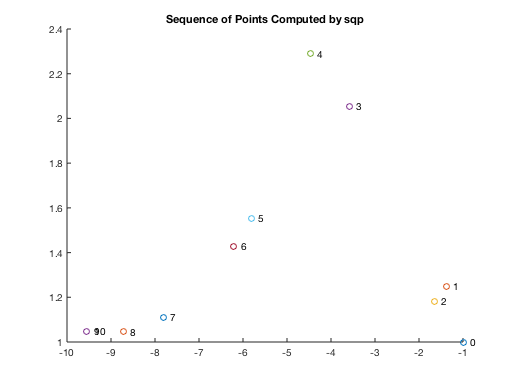
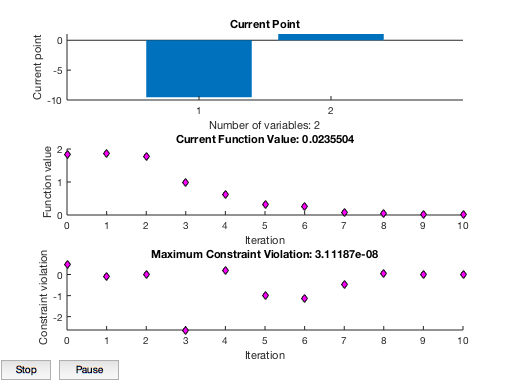
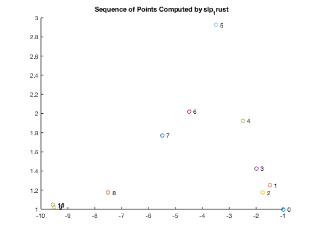
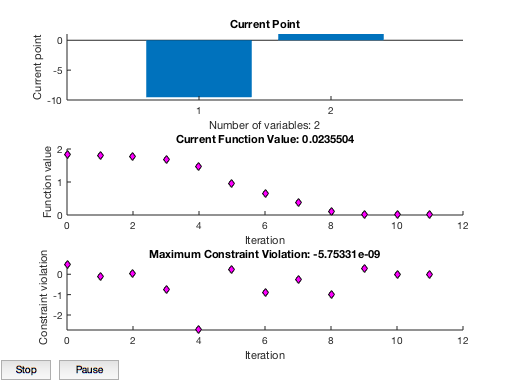
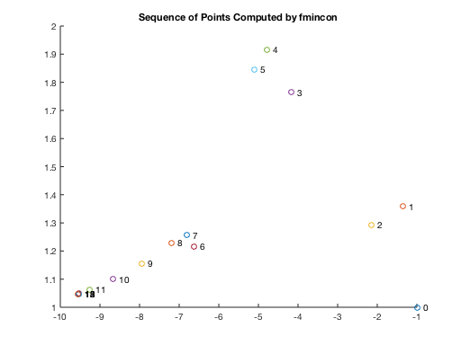
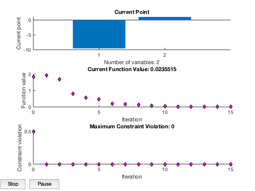

runOutputFcnExample Script
Illustrate use of options.OutputFcn for user to supply function to store and/or plot iteration history.
Contents
sqp
close all OutputFcnSqpExample('sqp');
Termination Criteria
1e-06 1e-06 0.0001
------------------------------------
Iter f-CNT f(x) STEP NAC max(g) j KTO max(S)
0 1 1.8394 0 2 0.5 1 0.295 0.368
1 4 1.8513 1 2 -0.092 1 0.126 0.283
2 7 1.7757 1 2 0.0195 1 0.267 1.94
3 10 0.98387 1 2 -2.63 2 0.714 0.87
4 13 0.63429 1 2 0.205 2 0.399 1.34
5 16 0.32503 1 2 -0.99 2 0.469 2.09
6 20 0.2555 0.193 2 -1.14 2 0.256 1.6
7 23 0.087328 1 2 -0.473 1 0.0588 0.914
8 26 0.04449 1 2 0.0596 1 0.0334 0.825
9 29 0.023547 1 2 0.00188 2 6.9e-05 0.000178
10 32 0.02355 1 2 3.11e-08 2 1.41e-09 1.69e-08
Optimization Terminated Successfully from sqp
sqp OutputFcn optimValues
fval: 0.0236
funcCount: 32
gradCount: 11
iterations: 10
constrviolation: 3.1119e-08
options: [1×18 double]
lambda: [1×1 struct]
status: []
-9.5474 1.0474
  slp_trust
OutputFcnSqpExample('slp_trust');
Sequential Linear Programming (SLP) Iteration History
Iteration Objective MaxConstraint Index Step-size Merit MoveLimit TrustRatio
0 1.8394 0.5 1 0 2.045
1 1.8129 -0.125 1 0.5 1.813 0.5 -9.788e+06 f *
2 1.7614 0.01875 1 0.25 1.813 0.25 0.5511 m +
3 1.6932 -0.775 1 0.25 1.693 0.25 1.085 g *
4 1.4785 -2.738 1 0.5 1.478 0.5 1.264 f *
5 0.96666 0.2375 2 1 1.478 1 0.7572 m +
6 0.64243 -0.9036 2 1 0.6424 1 0.6954 f *
7 0.37936 -0.2484 2 1 0.3794 1 0.8473 f *
8 0.10835 -0.9743 1 2 0.1083 2 0.637 f *
9 0.024503 0.2857 1 2 0.8094 2 -4.565 m +
10 0.023548 0.001289 2 0.04753 0.02632 1 0.9807 f +
11 0.02355 -5.753e-09 2 0.0001218 0.02355 1 1 g + Unbound
---------- ------------ ----------
Criteria 1e-06 1e-06 1e-06
SLP converged. Final objective function value = 0.02355
Lagrangian gradient 2-norm = 4.3368e-18
Lagrangian gradient inf-norm = 3.4694e-18
Optimality Tolerance = 0.0001
Trust Region Strategy uses filter
* Dominates prior points
+ Nondominated
- Dominated by prior point(s)
f/g/m Objective/Constraint/Merit governs Trust Ratio
slp_trust OutputFcn optimValues
f: [1×12 double]
g: [2×12 double]
rejected: [0 0 0 0 0 0 0 0 0 0 0 0]
RadiusFraction: [1 1 1 1 1 1 0.5000 1 1 1 1]
iterations: 11
funcCount: 36
gradCount: 12
message: 1
TR: [1×1 struct]
  fmincon
OutputFcnSqpExample('fmincon');
First-order Norm of
Iter F-count f(x) Feasibility optimality step
0 3 1.839397e+00 5.000e-01 2.679e-01
1 6 1.909268e+00 0.000e+00 5.186e-01 5.004e-01
2 9 1.668108e+00 0.000e+00 3.922e-01 7.950e-01
3 12 7.882972e-01 0.000e+00 3.506e-01 2.078e+00
4 16 5.617436e-01 0.000e+00 2.106e-01 6.346e-01
5 19 4.726470e-01 0.000e+00 2.440e-01 3.351e-01
6 23 1.985786e-01 0.000e+00 3.203e-01 1.643e+00
7 26 1.749276e-01 0.000e+00 1.044e-01 1.826e-01
8 29 1.334937e-01 0.000e+00 8.494e-02 3.941e-01
9 33 7.920676e-02 0.000e+00 3.746e-02 7.409e-01
10 37 4.610815e-02 0.000e+00 1.263e-02 7.357e-01
11 41 2.937493e-02 0.000e+00 3.544e-03 5.946e-01
12 44 2.371854e-02 0.000e+00 1.495e-03 2.773e-01
13 47 2.396254e-02 0.000e+00 2.092e-04 1.328e-02
14 50 2.363487e-02 0.000e+00 4.263e-05 1.779e-02
15 53 2.355146e-02 0.000e+00 5.606e-07 4.566e-03
Local minimum found that satisfies the constraints.
Optimization completed because the objective function is non-decreasing in
feasible directions, to within the value of the optimality tolerance,
and constraints are satisfied to within the value of the constraint tolerance.
 